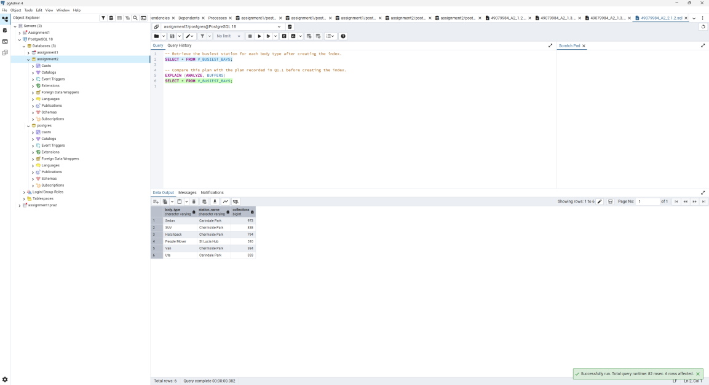
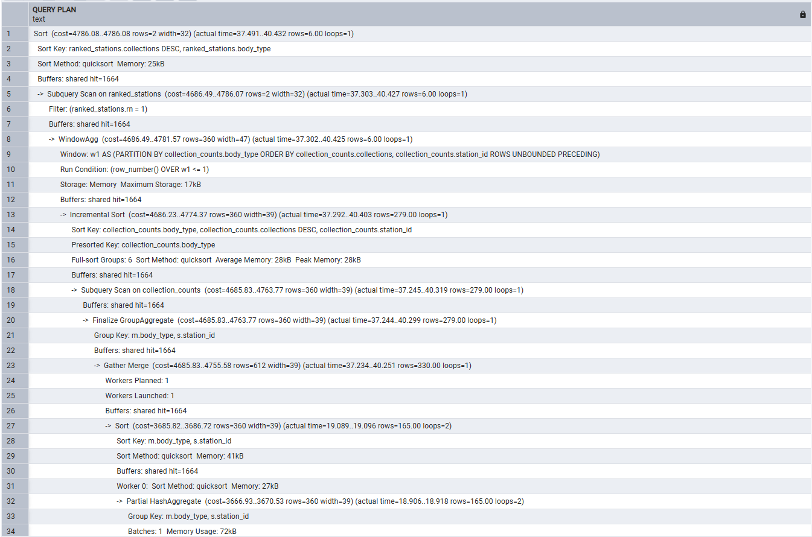
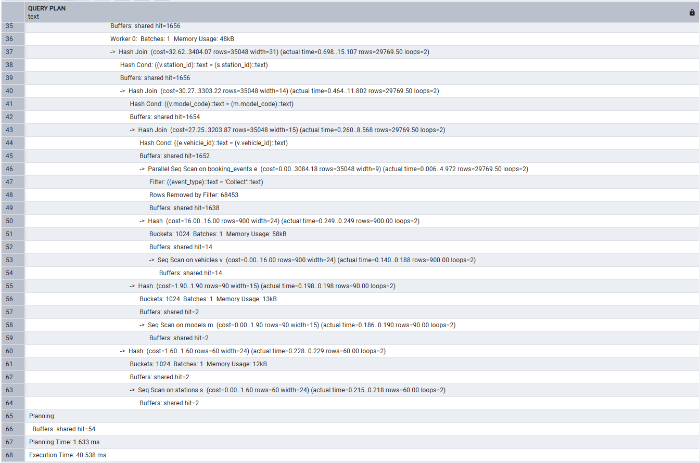

Q2.1.2有索引却仍然顺序扫描
先看懂题目在要求什么，再跟随数据、代码和真实证据，练习用自己的话解释。
英文原题 · Original task
(2) Re-run your query from Q1.1 (SELECT * FROM V_BUSIEST_BAYS;). Report the query plan. Compare this query plan to the one from Q1.1 and explain the differences, if any. (1.5 marks)

英文只合并PDF版式换行；提示、给定代码、分值均保留。原页图是版式及图示核对依据。答案报告是另一份文件，见第08节。
中文对照翻译
（2）重新运行Q1.1查询（SELECT * FROM V_BUSIEST_BAYS;）。报告查询计划，与Q1.1计划比较，解释差异（如有）。（1.5分）
以上为原题对照翻译；下一节开始为本站补充教学解释。给定SQL的对象名和字面值不翻译。
这道题究竟要我做什么
对照建索引前后同一视图查询。没有使用新索引也可以是正确结果，重点是用计划节点和数据比例解释，而不是期待计划必须变化。
| 核对项 | 本题要求 |
|---|---|
| 输入 / 已有条件 | FleetDB初始化脚本，以及前序题创建的对象；按题号顺序学习和实验。 |
| 交付内容 | 完整SQL、相关输出/计划截图，以及报告中的解释。 |
| 原题限制与分值 | Q2.1 Composite index (3 marks)；具体小问分值以第01节英文原文为准。 |
| 学习建议（非新增评分项） | 能够解释为什么这样写、结果怎样支持题意、改变关键条件会怎样。 |
前置知识与数据库背景
heap是表的实际行页，B-tree索引是另一套键到记录位置的结构。索引不自动含所有输出列。选择率是匹配行数/输入总行数；页覆盖率是涉及多少数据页，两者不同。BOOKING_EVENTS索引为(event_type,event_time)，MEMBERS表达式索引为规范化域名。
完整原始 SQL
来源：A2 根目录 / 49079984_A2_2.1.2.sql。完整保留原逻辑、注释、空行和语句顺序。下方行号按可下载文件的物理行计算。
先读整体，再逐行理解
该查询只筛全部历史Collect，没有event_time范围。59539次Collect分布很广，还需vehicle_id连接车辆，复合索引没有vehicle_id，读取索引后仍需很多heap访问。顺序扫描配合并行处理可能更合算。
- L1
-- Retrieve the busiest station for each body type after creating the index.注释说明此处已创建 Q2.1 复合索引，再查询与 Q1.1 同一个视图，语义保持不变。
Source comment: Retrieve the busiest station for each body type after creating the index.
- L2
SELECT * FROM V_BUSIEST_BAYS;读取 V_BUSIEST_BAYS 的全部结果列：车型类别、站名、取车次数。若上一行是 EXPLAIN，本行和上一行合起来是一条计划分析语句；否则直接显示视图结果。普通视图的定义会参与本次查询规划。
Read the busiest-bays view, or explain that read when preceded by EXPLAIN.
- L3
（空行）空行用于把相邻语义块分开，帮助区分输入、处理或独立语句；不执行 SQL、不提交事务，也不会重置配置。
A visual separator only; it executes no statement and changes no transaction or setting.
- L4
-- Compare this plan with the plan recorded in Q1.1 before creating the index.注释要求把本次建索引后的计划与 Q1.1 建索引前证据比较；不能仅凭索引存在就宣称加速。
Source comment: Compare this plan with the plan recorded in Q1.1 before creating the index.
- L5
EXPLAIN (ANALYZE, BUFFERS)EXPLAIN 修饰紧接着的 SQL，输出物理计划；ANALYZE 会真正运行它并记录 actual time、rows 和 loops，BUFFERS 记录缓冲页访问。结果是计划文本而非普通结果表；cost 是优化器估计单位，不能当成毫秒，也不能将父子节点耗时简单相加。
Execute the following query to collect its actual plan and buffer use; estimated cost is not milliseconds.
- L6
SELECT * FROM V_BUSIEST_BAYS;读取 V_BUSIEST_BAYS 的全部结果列：车型类别、站名、取车次数。若上一行是 EXPLAIN，本行和上一行合起来是一条计划分析语句；否则直接显示视图结果。普通视图的定义会参与本次查询规划。
Read the busiest-bays view, or explain that read when preceded by EXPLAIN.
特殊函数、语法与符号
先区分函数、关键字、运算符和语句；下面的输入输出例子均是教学示例，未在网页连接数据库执行。
ROW_NUMBER · 窗口行号
ROW_NUMBER() OVER (PARTITION BY body_type ORDER BY collections DESC, station_id)
无普通参数；按窗口顺序返回从1开始的bigint，每个分区重新编号。
- 本作业中的作用
- Q1.1在汇总结果上为每个body_type挑一个站点。
- 输入与输出示例
- 教学：Sedan/S1/5、Sedan/S2/5，加station_id排序后rn分别1、2。
- 边界与常见错误
- 不加稳定次序时并列胜者不确定；它不会像GROUP BY一样减少行数，要外层WHERE rn=1。
VIEW · 普通视图
CREATE VIEW name AS query;
保存查询定义，读取时基于当次可见数据执行规划。
- 本作业中的作用
- V_BUSIEST_BAYS、V_ACCOUNT_LIABILITY封装可重复调用的逻辑。
- 输入与输出示例
- 教学：底表费用从100变120后，再查普通视图看到符合快照的新总额120。
- 边界与常见错误
- 不会自动保存结果；创建成功不证明定义逻辑符合题目。同名CREATE通常报已存在。
CREATE INDEX / B-tree · 有序访问路径
CREATE INDEX IDX_EVENT_TYPE_TIME ON BOOKING_EVENTS(event_type,event_time);
建立额外的有序键结构帮助定位记录，默认方法为B-tree。
- 本作业中的作用
- 类型等值和时间范围形成索引连续段。
- 输入与输出示例
- 教学：先Incident后Return，每种内部时间升序，如按姓再按名的电话簿。
- 边界与常见错误
- 索引增加存储和写入维护；不保证采用。索引列不含amount/vehicle_id，所以某些查询必须回heap。
EXPLAIN / ANALYZE / BUFFERS · 观察真实工作
EXPLAIN (ANALYZE, BUFFERS) SELECT ...;
EXPLAIN只显示规划；加ANALYZE实际执行并给出测量；BUFFERS显示缓冲访问。
- 本作业中的作用
- 本作业比较计划成本、估计/实际行数、耗时与页访问。
- 输入与输出示例
- 教学：cost=0..10 rows=2，actual time=0.1..0.2 rows=6 loops=1，表示估2实6，成本不是0.2毫秒。
- 边界与常见错误
- EXPLAIN ANALYZE会真的执行语句；用于修改语句时也会产生修改。BUFFERS父节点通常包含子节点，不重复求和。
Seq / Index / Bitmap / Index Only Scan
Seq Scan; Bitmap Index Scan → Bitmap Heap Scan
Seq逐页检查表；Index从键定位再取行；Bitmap先收位置再按heap页取；Index Only要求足够列与可见性条件。
- 本作业中的作用
- 全时段Collect可顺扫，少量Incident适合bitmap；稀有域名仍回heap取姓名。
- 输入与输出示例
- 教学：1000行取3行可定位，取950行常顺读省额外索引工作。
- 边界与常见错误
- 少量行可能散在很多页；Index Only也可能有Heap Fetches。不能只看“有索引”推断计划。
截图、计划与执行结果
主报告p16–18：原生恢复索引后Planning1.633ms、Execution40.538ms；无索引重测7.797ms/52.686ms。原生p17两图覆盖68行；该轮恢复索引的上下文必须保留。


建索引后仍六行
结果与Q1.1相同；添加访问结构不应改变排名语义。对应下一页原生计划。
能证明什么 / 限制：与本题文字、完整代码和相邻证据一起核对；截图只证明其可见部分。



恢复索引后计划：1–34行
与r04-1对照同样的排序、窗口、聚合和连接结构，继续查看扫描对象。
能证明什么 / 限制：与本题文字、完整代码和相邻证据一起核对；截图只证明其可见部分。



恢复索引后计划：35–68行
仍Parallel Seq Scan，不用新索引；总Execution40.538ms、Planning1.633ms。
能证明什么 / 限制：时间更小但访问路径未变，不能归因为新索引被采用。
核对原答案报告文字与页码（与作业要求PDF区分）
答案报告 p16
16
Screenshot Q2.1 (1)
Marks: /0.5
Explanation
This B-tree index has event_type as its first key and event_time as its second key, in the
required order. It orders timestamps within each event type.
Comments:
Screenshot Q2.1 (2)
Marks: /1.5
SQL
-- Retrieve the busiest station for each body type after creating the index.
SELECT * FROM V_BUSIEST_BAYS;
-- Compare this plan with the plan recorded in Q1.1 before creating the index.
EXPLAIN (ANALYZE, BUFFERS)
SELECT * FROM V_BUSIEST_BAYS;
答案报告 p17
17
Screenshot Q2.1 (2)
Marks: /1.5
Execution plan after the index-restoration step, native pgAdmin, lines 1 to 34
Execution plan after the index-restoration step, native pgAdmin, lines 35 to 68
答案报告 p18

18
Screenshot Q2.1 (2)
Marks: /1.5
Explanation
The six result rows are unchanged. The native plan remains a Parallel Seq Scan of the event
log followed by hash joins, aggregation, ranking and sorting; IDX_EVENT_TYPE_TIME is
not used by this query. Its top cost is 4786.08..4786.08, the same as the native plan without
the index. Planning takes 1.633 ms and execution takes 40.538 ms, compared with 7.797
ms and 52.686 ms respectively in Q1.1.2. A faster single run with an unchanged access path
can reflect caching and run-to-run variation; it is not evidence of an index benefit.
The scan returns 59,539 Collect events distributed throughout the heap. The query also
needs vehicle_id, which this index does not contain. An index path would traverse many
index entries and fetch many heap pages, whereas a parallel sequential scan reads the table
efficiently. There is no timestamp condition, so the second index column does not narrow this
query. Adding an index gives the planner another option; it does not require its use.
Comments:
Screenshot Q2.1 (3)
Marks: /1
SQL
-- Count incidents and sum their charges for March 2026.
SELECT COUNT(*), SUM(amount)
FROM BOOKING_EVENTS
WHERE event_type = 'Incident'
AND event_time >= TIMESTAMP '2026-03-01'
AND event_time < TIMESTAMP '2026-04-01';
-- Report the execution plan for the March incidents query.
EXPLAIN (ANALYZE, BUFFERS)
SELECT COUNT(*), SUM(amount)
FROM BOOKING_EVENTS
WHERE event_type = 'Incident'
AND event_time >= TIMESTAMP '2026-03-01'
AND event_time < TIMESTAMP '2026-04-01';
另一个轮次的文本日志（保留独立来源）
以下来自completed或Study归档，数值可能与本页主报告不同，不作同一次实验拼接。
A2/completed/evidence/2.1.2_1.txt ↗
A2/completed/evidence/2.1.2_2.txt ↗
从要求推到结论
该查询只筛全部历史Collect，没有event_time范围。59539次Collect分布很广，还需vehicle_id连接车辆，复合索引没有vehicle_id，读取索引后仍需很多heap访问。顺序扫描配合并行处理可能更合算。
原生前后计划同为Parallel Seq Scan→Hash Join→聚合→窗口排名→最终Sort。两次top cost都4786.08..4786.08。输出仍6行，所以逻辑语义没有改变；节点未变却毫秒下降，不能归因于索引被使用。
这些是独立测量，缓存变暖或系统负载都能影响时间。不要把“40.538<52.686”写成新索引使查询加速的证据。
自测与口头讲解
核心知识点
ROW_NUMBER · 窗口行号 · VIEW · 普通视图 · CREATE INDEX / B-tree · 有序访问路径 · EXPLAIN / ANALYZE / BUFFERS · 观察真实工作 · Seq / Index / Bitmap / Index Only Scan
检查理解
从哪个证据可以判断新索引没有被用来读取事件表？
展开参考答案
看扫描节点名称和对象：出现Parallel Seq Scan on booking_events，而没有对idx_event_type_time的Index/Bitmap Index Scan。
再检查一个关键点
第二个event_time键在没有时间条件时缩小了范围吗？
展开参考答案
该查询没有时间范围谓词，所以没有利用第二列缩小需要的Collect集合。
再练一次：选一行代码说明输入、处理、输出；找一张截图说明它能证明什么、还不能证明什么。
向老师讲解的练习稿
我对题目的理解是：对照建索引前后同一视图查询。没有使用新索引也可以是正确结果，重点是用计划节点和数据比例解释，而不是期待计划必须变化。 实现时，该查询只筛全部历史Collect，没有event_time范围。59539次Collect分布很广，还需vehicle_id连接车辆，复合索引没有vehicle_id，读取索引后仍需很多heap访问。顺序扫描配合并行处理可能更合算。 从证据看，主报告p16–18：原生恢复索引后Planning1.633ms、Execution40.538ms；无索引重测7.797ms/52.686ms。原生p17两图覆盖68行；该轮恢复索引的上下文必须保留。 我还会说明这个边界：这些是独立测量，缓存变暖或系统负载都能影响时间。不要把“40.538<52.686”写成新索引使查询加速的证据。
练习稿为学习辅助，先理解再用自己的表达说明；其中数字均保留其来源轮次。